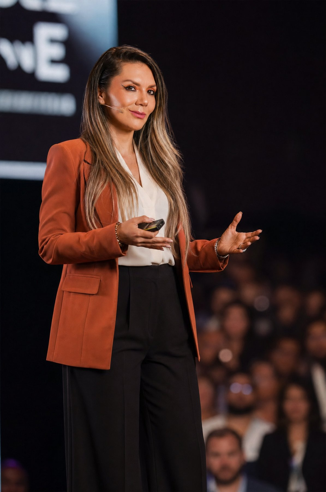

Soy Lorena Laverde. Llevo 21 años dentro de los negocios: 13 en el mundo corporativo y 8 construyendo, escalando y vendiendo el mío. Hoy ayudo a emprendedores y pymes a encontrar el dinero que su negocio está dejando ir — empezando siempre por un diagnóstico.

Trabajé 13 años en empresa hasta llegar a la gerencia de negocios: presupuestos, fuerza de ventas nacional e internacional, indicadores y decisiones que costaban dinero real.
Después construí mi propio negocio desde cero. Lo escalé a múltiples sedes, lo dirigí de forma remota desde otro país durante casi dos años — funcionando sin mi presencia física — y lo vendí. Esa es la prueba de lo que enseño: un negocio con estructura funciona aunque tú no estés.
Hoy combino estrategia financiera, neuroventas, marketing digital y coaching para que emprendedores y pymes de Latinoamérica dejen de improvisar y empiecen a decidir con claridad.
Nadie opera sin exámenes previos. Tu negocio tampoco debería tomar decisiones sin diagnóstico. Mi proceso tiene tres fases, sin letra pequeña:
90 minutos, uno a uno. Revisamos números, procesos, ventas y cuellos de botella. Sales con claridad sobre qué está frenando tu negocio — y qué no.
Un plan priorizado para los próximos 30 días: qué hacer primero, qué dejar de hacer y qué medir. Accionable para una persona, sin equipos grandes ni inversiones que no tienes.
Si decides continuar, te acompaño en la ejecución con sesiones semanales y soporte directo. Sin dependencia: el objetivo es que el sistema quede funcionando contigo o sin ti.
de crecimiento en facturación en dos meses — sin un solo cliente nuevo.
Un negocio llegó a la consultoría creyendo que necesitaba más clientes. El diagnóstico mostró otra cosa: el dinero ya estaba dentro — en precios mal estructurados, servicios invisibles y procesos que dejaban ir ventas.
Reestructuramos la oferta, ajustamos precios con lógica de neuroventas y ordenamos el proceso comercial. El resultado llegó de los clientes que ya tenía.
* Caso real de cliente en consultoría activa. Cada negocio es distinto: los resultados dependen del punto de partida y de la implementación de cada cliente. No prometo cifras — prometo diagnóstico honesto y método.
Empieza por el diagnóstico. Es el primer paso de cualquier camino — y el único que te pido dar hoy.
Un PDF directo, sin relleno, para que evalúes tú misma/o si tu negocio está dejando ir dinero. Te lo envío al correo.
Sin spam. Solo contenido útil para tu negocio. Puedes darte de baja cuando quieras.
Recibes de inmediato el enlace para elegir fecha y hora en mi calendario. Antes de la sesión te envío un cuestionario breve para aprovechar los 90 minutos al máximo. Después de la sesión recibes la grabación y tu hoja de ruta de 30 días por escrito.
Trabajo con emprendimientos, startups y pymes de servicios y comercio en Latinoamérica y con hispanos en Estados Unidos. Si tu negocio vende y quieres que venda mejor —o que funcione sin que estés en todo— sí aplica. Si busco algo distinto a lo que necesitas, te lo digo en la sesión: la honestidad es parte del servicio.
No, y desconfía de quien te lo garantice. Ese es un caso real, pero cada negocio parte de un punto distinto y los resultados dependen de la implementación. Lo que sí te garantizo: un diagnóstico honesto, un plan claro y método probado en negocios reales — incluido el mío.
El Método Rentable™ es mi metodología para negocios: diagnóstico, estrategia y estructura para que la empresa sea rentable y funcione sin depender de una sola persona. El Método ACCIÓN™ es para mujeres que quieren pasar de la intención a la ejecución en sus objetivos personales y profesionales. Misma firma, dos caminos.
Sí. Trabajo online desde Estados Unidos con clientes de cualquier país. Las sesiones son por videollamada y los horarios se coordinan según tu zona horaria.
90 minutos. Un diagnóstico honesto. Una hoja de ruta para 30 días. Ese es el punto de partida.
Agendar mi Sesión Diagnóstica · $199